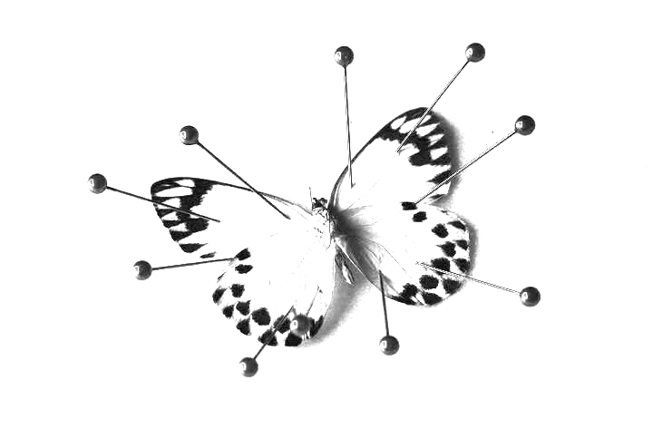
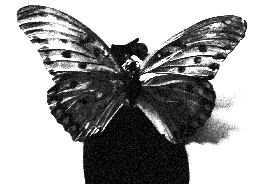

Possessiveness refers to a psychological tendency to feel a strong attachment to a specific object—be it a person, an object, or a status—and to want to keep it under one’s control.It stems from a desire to perceive the subject not as an independent entity, but as an extension or a piece of property belonging to oneself.
The desire to possess something is akin to a declaration that one intends to freeze its ‘time’. When I attempt to confine myself or another person within a specific framework, that subject ceases to be a living being and becomes a stuffed specimen. To me, the desire to possess is a static comfort forced into existence by an inability to endure the uncertainty of an ever-changing life. Yet nothing that stands still can harbour a soul.

Metamorphosis is not merely a change in outward appearance; it is a painful process of shedding, where the existing self is dissolved and reconstructed into a new form. It is a fierce struggle ithat rejects stability, dissolves the self into a fluid state, and casts it into uncertainty.
To reach the finality of completion, one must inevi-tably pass through a period of transitional instability. The helplessness of the moment one breaks through the shell and the time spent drifting without belonging anywhere are the essential prices paid for transfor-mation. It is only through this suffering that an entity gains the momentum to advance to the next stage.
For me, metamorphosis is the courage to willingly betray the self of yesterday. When we endure the raw terror of facing an unfamiliar version of ourselves after leaving behind everything that was once comfortable, we succeed not just in growth, but in a true 'trans-formation'. Change does not reside in the brilliant result, but in every stumble as one crawls toward that outcome.
Liberation signifies a state of escape from external controls or the internal prisons of one's own making.
It is not a mere change of location,
but a declaration of returning to one's whole, individual self, separated from all the relationships and symbols that once defined and constrained them.
For me, liberation is not about gaining something, but rather the process of reducing the ‘weight’ that bound me to zero. That transparent void which appears when one has emptied oneself of both the compulsion to become something and the sense of security that comes from belonging to someone else is the very essence of freedom. Liberation is completed not so much by the act of taking flight itself, but by the resolute realisation that one can never return to that narrow cocoon.

In cinema, the butterfly serves as a pivotal visual device signaling decisive shifts in a character’s convictions or state of being. I have gathered these fragments from across 15 films, analyzing and documenting the unique significance each one holds within its narrative. This archive functions as a digital catalogue, inviting a rediscovery of these cinematic metaphors.